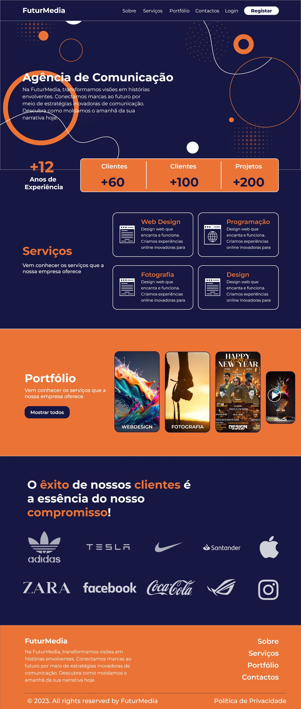
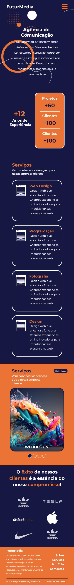

UI/UX · Design de Interação
FuturMedia
Website e versão mobile para uma agência de marketing e comunicação fictícia, do esboço em papel ao protótipo de alta fidelidade em Adobe XD.
- Ano: 2023
- Papel: Design de interação · projeto académico
- Contexto: Mestrado em Tecnologia e Multimédia, UTAD
- Ferramentas: Adobe XD
Processo
Do esboço ao ecrã final
Arraste a linha (ou use as setas do teclado) para comparar o esboço em papel com o mockup de alta fidelidade.
Website
Em todos os ecrãs
Escolha o dispositivo e percorra a página dentro do ecrã.


Contexto
Projeto da unidade curricular de Design de Interação do Mestrado em Tecnologia e Multimédia: criar a presença digital da FuturMedia, uma agência fictícia de marketing e comunicação para empresas de tecnologia.
O desafio
Apresentar os serviços e o portfólio de uma agência de forma clara, envolvente e acessível a todas as pessoas.
Processo
Pesquisa de mercado: Mediaon, Qreativ, Bleam e Fiverr.
Público-alvo, personas e estratégia de comunicação.
Esboços das páginas web e mobile.
Mockups de alta fidelidade em Adobe XD.
Acessibilidade
A pesquisa estudou vários tipos de deficiência — visual, auditiva, motora, cognitiva, de fala, epilepsia fotossensível, ataxia e défice de atenção — para orientar as decisões de design.
Identidade
A paleta junta o azul-escuro (confiança e harmonia) ao laranja (criatividade e sociabilidade), com preto e branco, a partir da psicologia da cor de Eva Heller.
Resultado
Um website com sete ecrãs — início, serviços, portfólio com filtros, sobre, contactos, login e registo — em versão para computador e telemóvel.